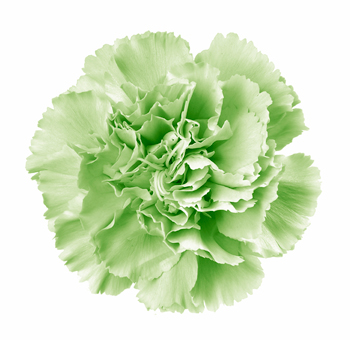

“The Green Carnation Prize got off to a great start in 2010 as an award that celebrated the best fiction and memoirs by gay men. It provoked debate, produced an intriguing shortlist and chose a worthy winner in Christopher Fowler’s ‘Paperboy’.

Now, we can announce that the Green Carnation is back for 2011 – and it’s even bigger and better. Set to become Britain’s most prestigious literary prize for modern gay writing, it has now opened its doors to all LGBT (Lesbian, Gay, Bisexual and Transgender) writers. We hope thereby to engage the wider LGBT community in our constant search for great modern writing – from the LGBT community and for all.“It’s brilliant, we were thrilled with the prize this year and next year is going to be a new challenge with a wonderful mix of judges who have a very eclectic taste in books and, most importantly, a passion for reading,” says Simon Savidge, chair of the judges for 2011.
“I’m delighted to be associated with Green Carnation Prize, I love that the remit is now expanded, and I’m looking forward to some great reading in 2011,” says Stella Duffy, award-winning author and one of the two new judges of the 2011 Green Carnation Prize.
Michelle Pauli, deputy editor of guardian.co.uk/books, also joins the judging panel which includes two of last year’s judges, book blogger Nick Campbell and author and last year’s chair Paul Magrs. “It’s great to have continuation in a book prize panel each year along with some fresh eyes, we will also be gaining guest judges in the later stages, more news on that in due course,” adds Simon Savidge.
The prize is open to any novel, short story collection or memoir written by any LGBT author worldwide published in the UK in hardback for the first time in 2011 or books that were published in hardback in 2010 but come out in paperback between 1st January 2011 and 31st December 2011 are eligible. For the full submission details please visit the website here.”